|
|
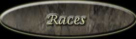 |
|
Voir statistiques
Lorsque que les dieux jumeaux dominèrent le nouveau monde, ils décidèrent de donner à chaque race une nouvelle chance.
Humain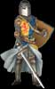 |
Race ancienne dont l'intelligence et la rage de vivre n'a d'égale que la cruauté et la soif du pouvoir. La polyvalence en fait une race bien équilibrée. Ils excellent dans l'art du combat, dans la maîtrise de la magie et dans les techniques d'espionnage et du vol. |
Elfe Noble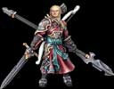 |
Cette race est la plus ancienne du monde, elle est en harmonie avec la nature, les arts et les sciences. Leur sagesse est légendaire, et bien des peuples cherchent leurs conseils. Il ont toujours eu un goût prononcé pour la magie. Quelques très rares individus de cette race ont même reçu l'enseignement de Yah. |
Elfe Noir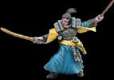 |
Les elfes noirs sont des cousins très proches des elfes nobles. Ils vivent en retrait et sont assez discrets. Ils excellent dans l'art de la magie et sont de fiers combattants. Ayant dévellopé de bon moyen de défense, ils sont très difficile à déloger de leur foyer.. |
Nain |
Race de petite taille mais douée d'un sens du travail extraordinaire. Il sont de fiers combattants, robustes et sans peur. Ils préfèrent vivre près des montagnes où ils y extraient de l'or. Ils sont légèrement lent mais d'une résistance à tout épreuve. |
Orc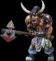 |
Cette race comporte les individus les plus forts et résistants de ce monde. Ils ont goût naturel pour le combat. Ils ont été exclus de toute forme de magie par les dieux. Cette exclusion est dûe à un puissant mage orc nommé Burok. Il s'était retourné contre les dieux pour pouvoir régner sur ce nouveau monde. Le combat fût un véritable échec pour lui, les dieux lui retirèrent ses pouvoirs et le forcèrent à errer dans les marais sans fin. On dit qu'il aurait réussi à en sortir... |
Génie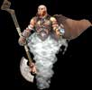 |
Ce peuple est né de l'amour de Yah avec une elfe noble du nom de Talandelle. Elle était une elfe fortement douée en magie. Les génies se sont développés en suivant les voies magiques de Yah et sans jamais s'en détournées. Il ont atteint une maitrise de cet art qui n'a jamais été égalée. |
Centaure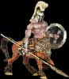 |
Cette race mi-homme, mi-cheval est l'une des plus anciennes du monde. Ils sont rapides, intelligents et possèdent une endurance hors du commun. Ils vivents généralement en forêt mais préfèrent les combats dans des endroits ouvert. Cela leur permet de tirer le maximum de leur vitesse. |
Amazone
|
Cette race est issue de la race humaine. Un groupe de femmes guerrières décidèrent de s'installer dans une vallée isolée. Elles sont fortement axées sur le combat. Excellentes cavalières, elles maitrisent à perfection l'élevage des chevaux. Le dieu Hai a vécu parmi eux pendant plusieurs années. Elles recherchent la compagnie des hommes uniquement pour se reproduire, si l'enfant est une fille elle le garde et l'élève, si c'est un garçon il est abandonné. |
Hobbit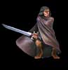 |
Race généralement tranquille et calme. Ils sont de petite taille mais de très fiers travailleurs. Il possèdent la capacité de se déplacer sans faire de bruit. Ils sont généralement de très bons voleurs. Ces gens sont résistants mais peu enclin à l'attaque. |
Gargouille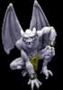 |
Cette race fût créée et entraînée par l'orc magicien Burok. Bien que les dieux ont éliminé l'armée de gargouille de Burok, plusieurs membres de cette race ont réussi à s'échapper avant la grande guerre. Ils ont formé des clans organisés et ont acquis de grande connaissance. Leur possibilité de voler, est un avantage important durant les attaques qui en font de redoutables adversaires. . |
Cyclope |
Cette race est une force de la nature.Vivant principalement dans les zones désertiques, les cyclopes possèdent une force incroyable. Plusieurs de leur race ont suivi les traces de Hai. Ils ont appris le sens du combat. Les membres de cette race sont toujours enchantés de passer à l'attaque. |
Mort-vivant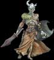 |
Après la grande guerre un nombre incroyable de cadavres gisaient sur la plaine. Lorsque Yah retira la magie de Burok, une partie de cette force fut absorbée par le sol. Lorsque les cadavres commencèrent à se décomposer cette magie entra en eux. Cette magie leur donna la vie, une vie étrange... |
Elfe des bois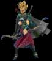 |
L'Efle des bois était considéré comme un être pacifique. Voyant de nombreuses guerres, menacer les forêts et les verts pâturages, l'efle des bois décida de combattre pour défendre la nature. Plus petit et plus frêle que ses cousins les elfes, l'elfe des bois, possède cependant une agilité et une dextérité hors du commun dans le maniement de l'arc. |
Lycan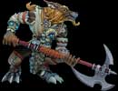 |
Suite à l'apparition du pustuleux Mop qui plongea Hainyah dans une noirceur totale, les Lycans firent entendre leurs hurlements dès la première pleine lune. Profitant de leur vision nocturne, ces Loups-Garou ont attaqué sans pitié les villages humains. Ce déplassant en meute ces créatures presque loups, ont vite muté en d'effroyables Lycans. |
Malea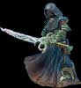 |
Les gens de cette race ont l'avantage de pouvoir changer d'apparence à leur guise. Se confondant depuis toujours aux autres races, leur existence a été longtemps inconnu. Voyant leur population grandir, les Maleas décidèrent enfin de se regrouper en tant que peuple unique. Ayant voyagé sous plusieurs identitées, les Maleas apprirent beaucoup des différents peuples qu'ils ont côtoyés. |


| Le
degré de jouabilité des races | |||||
| Facile | Moyen | Difficile | |||
| Races |
Avantages |
Inconvénients |
HumainÉlite (7-5) |
Ingénieur en siège: Une production accélérée des armes de siège Attaques de siège se font en 24 heures Château impériale: Les avantages des chateaux sont doublés. Apprentissage éclair :50% de réduction sur le coût des sciences Sciences avancées: Les sciences peuvent atteindre le niveau 35. Cavalerie lourde: Les chevaux ayant un cavalier procurent 1 point en défense.(Voleurs, paysans, mendiants ne peuvent être des cavaliers) Palladin divin: +2 d'attaque à l'élite contre les morts-vivants. Les ateliers ont plus de chance de produire des armures |
Le coût des guerriers 250 or Le coût des sentinelles 750 or Le coût des archers 350 or Double des coûts de démolitions de bâtiments Deux fois moins de bâtiments sont construit par heure |
Elfe NobleÉlite (18-9) |
Anneau de Thalandelle : L'anneau n'a nullement besoin d'être rechargé Accélération mystique: Double les points d'expériences acquis par le mage lorsqu'il lance des sorts Archer elfique: Archers attaquant à 4 et défendant à 4 Immortalité:Les élites sont immortels (sauf lors du sabotage et des attaques suicides), mais il est possible d'avoir un élite par acre au maximum. Lors d'attaque on ne peux pas envoyer plus d'unités d'élites que notre nombre d'acre. Courage honorifique: chaque elite donne 2 points d'attaque supplémentaire à une troupe qui les accompagne durant une attaque uniquement. |
10% moins de revenu |
Elfe NoirÉlite (8-3) |
Mysticisme naturel : Le mage débute avec 3000 points d'expérience Contrôle supérieur: +20% d'efficacité des sorts. Hyper-concentration: Le mage récupère 1 point de concentration supplémentaire par jour. Fortifications complexes: Chaque % de fortification donne 4% de protection supplémentaire. Médecine avancée: 25% moins de perte au combat. Toutes informations faite sur eux par les voleurs ne sont pas précises Magie polyvalente: Accède à 2 cercles de magie. Le cercle noir est obligatoire. Les attaques mage-voleur donne de l'expérience au mage. |
Demande 50% plus de bois pour les bâtiments |
OrcÉlite (9-3) |
Résistance partielle à la magie Habitations rustiques: +2 personnes par maison Controle par la peur: 5% d'acres supplémentaires lors des attaques Meilleur efficacité des places forte (2%) Accès à l'opération de voleur embuscade Possède le sort Trou noir dès le départ +1 d'attaque aux élites contre tous les types d'elfes. |
Les temples produisent 75% moins de points d'expériences
Restreint aux cercles de magie noire et lumière seulement
25% des sorts lancés échoueront
Accès à aucune science |
NainÉlite (8-5) |
Maitre construteur: Construit 7 bâtiments supplémentaires par jour hainyen. Extraction rapide: Les mines procurent 25 or de plus par jour hainyen. 15% moins de perte d'acre lors d'attaque Au marché chaque unité de bois ou de nourriture coûte 5 pièces d'or. 50% de réduction sur le coût des sciences de tactique et de logistique Les temples, tours de guet, campements,
atelier et les places fortes ne
demandent aucun bois pour leur construction. |
+10 jours de retour d'attaque obligatoire Pas accès aux écuries
|
CentaureÉlite (7-6) |
Attaque éclair: 6 jours de moins de retour d'attaque Fierté collective: Pas de coût associé aux mendiants Pas de coût de bois associé aux voleurs Menuiserie avancée: Les scieries produisent 35 cordes de bois supplémentaires par jour. Endurance divine: 50% moins de perte au combat Science furtivité et ébénisterie débute au niveau 5. Les campements ne demandent aucun frais de bois et la moitié des frais en or. |
Pas accès aux écuries |
CyclopeÉlite (8-3) |
Stratégie militaire: 40% de gain d'expérience supplémentaires du général offensif. Folie guerrière: Les guerriers attaquent à 7 mais se défendent à 1 Architecture rustique: Les bâtiments coûtent 75 cordes de bois Accès au cercle de magie noire |
Consomme 50% plus de nourriture Le mage récupère 1 point de concentration de moins par jour. Pas accès au cercle de l'eau |
AmazoneÉlite(6-6) |
Cavalerie agile: Les chevaux procurent 2 points d'attaque et 1 point de défense Don collectif: Pas de dépenses militaires pour les guerriers, sentinelles et archers. Voleur récupère 1 point d'efficacité supplémentaire par jour Écurie abrite 175 chevaux Charisme naturel: Perd 50% moins de voleurs lors des opérations Fertilité légendaire: Immunisé contre le sort de Stérilisation +2 paysans par campement Peut atteindre 30% de campement Accès à l'opération de voleur embuscade |
Les maisons hébergent 2 personnes de moins
|
GénieÉlite (4-7) |
Magie polyvalente: Accède à 2 cercles de magie. Le cercle d'air est obligatoire. Hyper-concentration: Le mage récupère 1 point de concentration supplémentaire par jour. Guerriers attaquant à 5 et défendant à 1 +3 de charge supplémentaire à l'anneau Les temples produisent 50% plus de points d'expérience Chaque temple rapportent 25 or. Science mysticisme débute au niveau 8. Les frais d'entretien du mage sont réduits de moitié |
N'accède pas à la guilde du vol Atelier ne produit pas de d'armes de siège, uniquement des armures Génère 20% moins d'or Le coût des guerriers 500 or
|
Morts-VivantsÉlite (11-0) |
Regénération :Pas de pertes militaires dans les combats (sauf durant les attaques suicidaires, les armes de siege, le sabotage et les embuscades) Bâtiment unique: mur de l'ombre Aucune nourriture nécessaire Archers attaquant à 2 et défendant à 4 Désespoir: La seigneurie attaquée ne pourra pas faire d'attaque pour une période variant de 3 à 8 jours. Ceci s'applique uniquement aux races n'ayant pas accès au cercle noir (Humain, Elfe noble, Nain, Centaure, Amazone, Hobbit, Elfe des bois, Génie et Maléa) Accès au cercle de magie noire |
Les voleurs ont 50% moins d'efficacité et de gain 25% des opérations effectuées par les voleurs échoueront. Pas accès aux fortifications Les voleurs récupèrent 1 point d'efficacité de moins par jour. Campement n'héberge que 2 personnes Pas accès à l'attaque raid Soif de sang: Doit attaquer au moins une fois à tous les 60 jours hainyen sinon les élites meurent progressivement. (Les attaques suicidaires ne sont pas prisent en compte.) |
HobbitsÉlite (5-5) |
Habitations rustiques: +1 personne par maison Furtivité avancée: Les voleurs ont +40% d'efficacité et de gain Vol inné :Les voleurs coûtent moins chers Expert en vol: Accède au deux guildes de voleur Voleur récupère 1 point d'efficacité supplémentaire par jour Effficacité requise par opération est diminuée de moitié. Entraînement des voleurs en 8 jours Sabotage absolu: Les opérations de sabotage peuvent affecter les élites ennemis Anonymat partiel: Toutes les attaques effectuées restent anonymes. Golem de marbre: +20% d'utilisation en tout temps Les armures ont +1 de pouvoir défensif Campement héberge 15 personnes Chaque voleur donne +2 points d'attaque lors d'attaque mage/voleur. |
Les temples produisent 25% moins de points d'expériences |
GargouilleÉlite (4-4) |
Habitations avancées: +7 personnes par maison Attaque aérienne: 4 jours de moins de retour d'attaque. Fuite aérienne: Perd 80% moins de voleurs lors des opérations. Pas affecté par les murs. Pas affecté par les sorts de murs de protection. Attaque surprise: Ils ont un meilleur potentiel de chance de 6% supérieur à la normale lors des combats Toutes les unités militaires sont entrainées en 8 jours Les tours de guet ne demandent aucun bois pour leur construction. Accès au cercle de magie noire |
Pas accès aux chevaux Pas accès aux attaques de siège Subissent 3 fois plus de perte militaire lors des combats. |
Elfe des boisÉlite (2-8) |
Tranchée: Diminue de 100% l'efficacité des chevaux ennemis lors d'attaque. Aucun frais de mage Chaque temple rapportent 10 or. L'aurore boréale est toujours actif L'arc de Robin: Archers attaquent à 5 et défendent à 3 (coût 500) |
Les généraux (offensif et défensif) ont 50% moins de points Les sciences sont limités au niveaux 20 |
LycanÉlite (5-6) |
Mutation : Lors des attaques réussis, 15% des guerriers se transforment en élites (ne s'applique pas lors des attaques déshonorantes et lors d'attaque raid). Absorbtion magique: Lors du lancé d'un sort offensif, récupère des points d'expériences de la seigneurie visée. Attaque en meute: Un bonus de 10% de points d'attaque est ajouté quand l'attaque est composée de guerrier uniquement Guerriers attaquant à 4 et défendant à 3 Meilleur efficacité des places forte (2%) Accès au cercle de magie noire |
Impossible de payer pour entrainer des élites Sentinels attaquant à 2 et défendant à 2 |
MaleaÉlite (?-?) |
Anonymat: Toutes activitées restent anonymes et les informations obtenues sur eux sont toujours très vagues. Don collectif: Pas de dépenses militaires pour les guerriers, sentinelles et archers Fierté collective: Pas de coût associé aux mendiants Les points d'attaques et de défenses des élites, guerriers, sentinelles et archers changent de valeur à tous les 24 jours de jeu. Les valeurs obtenues sont aléatoires et peuvent prendre la valeur de n'importe quelle unité équivalente chez les autres races. Peuvent changer de cercle de magie à volonté. Cependant lors du changement de cercle, TOUS les sorts actifs sont éliminés (exception anti-magie) et les points de concentration du mage descendent à 5. |
Demande 50% plus de bois pour les bâtiments Consomme 50% plus de nourriture |